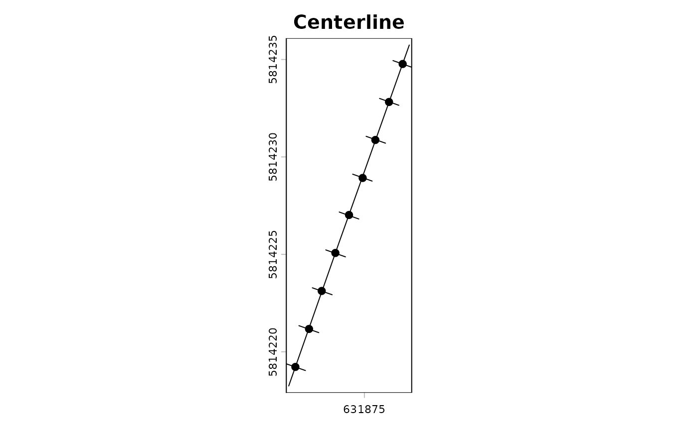

sample_transects.RdSample transects.
sample_transects(x, y, interval, keep = 1, spar = 0.3,
rm.intersections = TRUE, transect.length = NULL)A SpatRaster containing at least one layer.
A SpatVector containing a polygon or a line that defines the
boundary of an area.
(Numeric). Distance between transects.
(Numeric). The proportion of vertices from the polygon to be retained. Default value is 1.
(Numeric). The smoothing factor of the centerline ranging from 0 to 1. The higher the value, the greater the smoothing. Default value is 0.3.
(Logical). Should overlapping transects be removed?
Default is TRUE.
(Numeric). Transect length. By default, this is automatically estimated.
The result is a list consisting of three objects:
The centerline of the polygon as SpatVector.
The data frame containing the cell values for the center points.
The data frame containing cell values for the transects.
library("terra")
#> terra 1.9.27
DEM = system.file("DEM.tif", package = "TrailMapper")
DEM = rast(DEM)
boundary = system.file("boundary.gpkg", package = "TrailMapper")
boundary = vect(boundary)
boundary$ID = 1 # this is now required to work
output = sample_transects(DEM, boundary, interval = 2)
str(output)
#> List of 3
#> $ centerline :S4 class 'SpatVector' [package "terra"]
#> $ central_points:'data.frame': 9 obs. of 4 variables:
#> ..$ ID : num [1:9] 1 2 3 4 5 6 7 8 9
#> ..$ DEM: num [1:9] 111 111 110 110 110 ...
#> ..$ x : num [1:9] 631877 631876 631876 631875 631874 ...
#> ..$ y : num [1:9] 5814235 5814233 5814231 5814229 5814227 ...
#> $ transects :'data.frame': 251 obs. of 4 variables:
#> ..$ ID : int [1:251] 1 1 1 1 1 1 1 1 1 1 ...
#> ..$ x : num [1:251] 631877 631877 631877 631877 631877 ...
#> ..$ y : num [1:251] 5814235 5814235 5814235 5814235 5814235 ...
#> ..$ DEM: num [1:251] 111 111 111 111 111 ...
# plot centerline
plot(output[[1]], main = "Centerline")
# plot central points
points(output[[2]]$x, output[[2]]$y, pch = 19)
# plot transects points
for (i in unique(output[[3]]$ID)) {
d = output[[3]][output[[3]]$ID == i, ]
lines(d$x, d$y, lwd = 2)
}
